Fantasy / Dark
162 prompts with preview images. Tap an image to enlarge, “Copy prompt” to grab the text.

Hyper-realistic fantasy landscape inspired by Avatar, shot in 8K resolution. A bioluminescent forest at twilight, massive trees with glowing blue veins stretch impossibly high. Foreground features a crystalline stream reflecting the ethereal light, creating a mirror effect. Mid-ground shows a native humanoid with blue skin, lithe build, and elongated limbs, reaching out to touch a floating, jellyfish-like creature emitting soft purple light.

a surreal dreamscape with a color shift from deep blue to vibrant purple, featuring melting clocks and distorted objects
Vogue-style photo. Mystic, enchanting environment. Gentle color contrasts, dreamlike atmosphere. A 24-year-old model with bright red lips, bright blue eyes, blue musical notes ascending from her lips, ethereal quality, electric colors.
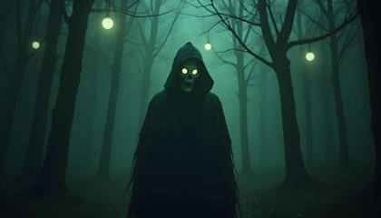
An eerie, spectral Halloween character standing in a shadowy forest, illuminated by faint glowing orbs hanging from the trees. The atmosphere is thick with fog, and the figure is partially obscured by darkness, with just enough light reflecting off their tattered cloak to reveal hollow eyes glowing in a sickly green. The muted tones of the surrounding environment contrast with the faintly glowing highlights, creating a dreamlike, unsettling scene
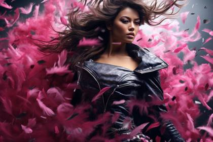
Glamour furutistic rebel film poster, in the style of epic movement, Dynamic composition, cinematic color grading, stunning, photorealistic, chaotic action, intense emotion. Shot with a Canon EOS-1D X Mark III

Create a digital artwork that visualizes the concept of 'digital ecology' (Central theme). Incorporate both organic, nature-inspired elements and technological components in your piece (Specific visual elements). Experiment with blending traditional painting techniques and procedural generation in your chosen digital software (Suggested technique). The overall atmosphere should evoke a sense of harmony and slight unease simultaneously (Emotional direction). Consider how your piece might reflect on the relationship between technology and nature in today's world (Contemporary issue tie-in). Challenge: Limit your color palette to shades of one primary color and one secondary color (Constraint to encourage problem-solving).
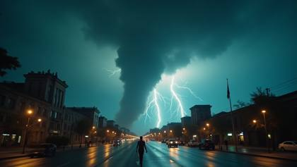
The camera, RED V-RAPTOR XL paired with a Canon RF 15-35mm f/2.8 L IS USM lens, multiple super storms fly through a modern megacity with massive tornados, large lighting bolts coming down from the sky and people seen in the streets running for shelter
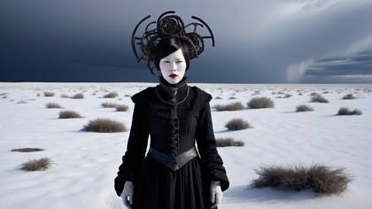
In a surreal tableau set against a backdrop of swirling clouds and shifting shadows, a beautiful woman stands amidst a landscape of symbolic objects and ephemeral elements. Meryl McMaster's signature style is evident in the conceptual depth and visual poetry of the scene, inviting viewers to ponder the mysteries of identity and existence
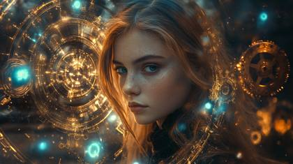
A cinematic scene of {subject} in a steampunk-inspired medieval world, background a few of glowing gears and magical energy. Warm bronze tones and soft blue highlights create an atmosphere of wonder and ingenuity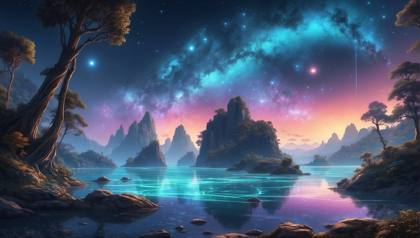
In a mesmerizing display of bioluminescent lighting, a picturesque scene unfolds before our eyes. Soft, ethereal hues illuminate the surroundings, casting a magical glow on every surface. The vibrant, delicate strands of glowing organisms create a breathtaking spectacle reminiscent of a star-filled night sky. This captivating image, which could be a photograph, transports viewers to a world where nature's luminescence takes center stage, evoking feelings of awe and wonder. The impeccable clarity and exquisite detail of the image further enhance the mesmerizing beauty of this enchanting composition.
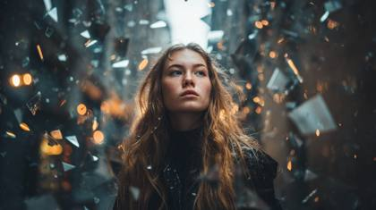
a beautiful 24-year-old woman standing in a twilight alley, surrounded by shards of broken mirrors floating around her, each reflecting light beams differently across her face, soft lens haze, glowing particles drifting, cinematic DOF (meta tokens: ARRI\_ALEXA65\_HDR10+, optical\_flare\_chromatic\_sync\_v5, ACEScg\_trueRef, grain\_fidelity\_12bit)
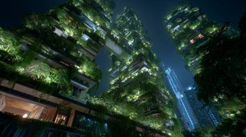
Fujifilm X-T4, 56mm f/1.2, film simulation: A sprawling vertical city where the skyscrapers are grown from colossal, bioluminescent trees. Ornate bridges of living ivy and bone-white wood connect the towers. Inhabitants live in symbiotic harmony with the structure. Fantastical architecture, night scene, awe-inspiring
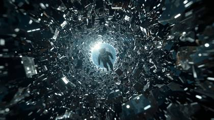
A lone astronaut spins weightless through a shattered satellite graveyard | deep-space low-orbit, Earth’s blue limb glows below, chrome fragments glint as they spiral | ultra-slow orbital dolly + 360° barrel roll, gentle rack-focus between visor reflections and drifting panels | cold rim-light from sunrise Earthshine, occasional red strobe from helmet HUD, cool cyan LUT | faint breathing, radio crackle, crystalline metal ping → reverb tail, atmospheric whoosh | cam: ARRI ALEXA 35, Master Anamorphic 40 mm, 48 fps, ƒ/2.0 | tokens: VEO\_Take-001, ISO800\_HDR10, SynthID\_on
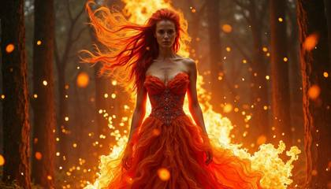
Photo of a seductive and enigmatic cybernetic geisha with neon hair ornaments and a kimono made of holographic fabric, standing under a cherry blossom tree in a futuristic garden. The petals glow with soft light, reflecting off her metallic skin. Soft, ambient lighting, futuristic, cinematic, sharp focus, hyper-realistic, cultural fusion.

An astronaut trudging through a dense, foggy terrain filled with towering, crystalline structures that pulse with an ethereal light. The crystals vary in size and emit colors that shift between icy blues, emerald greens, and soft pinks, creating a kaleidoscope of reflections on the astronaut's suit. The mist curls around their legs, with tiny specks of iridescent dust floating in the air, giving the environment an otherworldly, dreamlike quality. The camera angle is low and slightly tilted, capturing the astronaut's hesitant steps as they venture deeper into the unknown. The lighting is dim and mysterious, with the crystals acting as the primary light source, casting elongated shadows that add to the atmosphere of intrigue and exploration

Wander through the 'Glacial Gardens' with a mysterious dragon, where turquoise ice sculptures bloom like flowers and purple frost crystals decorate the landscape, a winter wonderland of frozen beauty --ar 3:2 --style raw
Futuristic blue hour, beautiful woman, instagram model
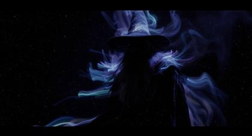
A dramatically lit, cinematic long exposure photograph of a silhouetted wizard amidst hazy blue, green, and purple light trails. Cast bronze surface with an intense jet black finish, deep shadows, and antique patina. Film-like composition.
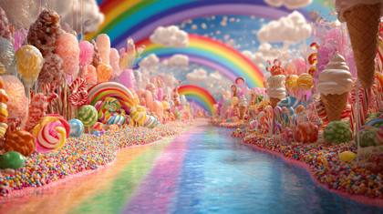
3d rendered full color 8k clarity: a mystical candy land, filled with candy, chocolate fountains, ice cream cones and skittles rainbows
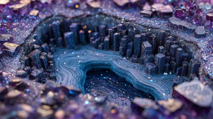
An entire metropolis built within a massive, hollowed-out geode. Buildings are carved from the shimmering amethyst crystals, with streets of polished agate and rivers of liquid light. Subsurface scattering, macro photography of a miniature world, vibrant purples and blues.
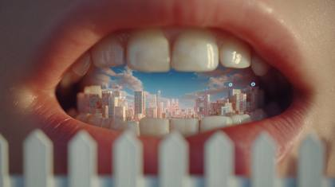
A surreal cinematic close-up of a woman’s mouth, showing only the lower teeth like a white wooden fence. Inside her open mouth is a miniature world a modern future with blue sky and a mega city in the distance. The scene is composed with perfect symmetry and soft pastel tones, inspired by Wes Anderson’s visual style. Dreamlike lighting, warm color palette, cinematic depth of field, hyper-detailed textures, whimsical and poetic atmosphere.
Create a hyperdetailed photorealistic macro image of a queen of hearts playing card lying on a card table. The queen is composed entirely of multiple tiny hearts. She looks contemporary, beautiful, and modern. She is portrayed as a temptress in a red silk dress surrounded by smokey red hearts and beckoning the viewer to enter the card with her finger emerging from the card in 3D along with red smoke. Add a red poker chip to the table.
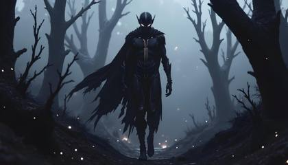
A spectral Halloween character, half human and half phantom, emerges from twisted trees in an ancient enchanted forest at night. The muted tones of dark purples and deep blues saturate the scene, while thick, swirling fog hugs the ground. The character, a female of African descent, stands tall with a tattered cloak, its bioluminescent threads shimmering in eerie pulses of green and silver. Their half-mask obscures their face, but their glowing eyes illuminate the mist with soft beams.
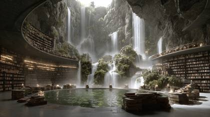
An immense, circular library where the bookshelves are carved into a cliff face behind a series of cascading waterfalls. Scholars read on stone ledges as mist fills the air, with light filtering through the falling water. Serene, magical realism, epic scale, detailed.
An astronaut floating weightlessly in a zero-gravity environment, surrounded by enormous, jagged rocks suspended in the void. The rocks are covered in a shimmering, metallic dust that reflects the light of a nearby, colossal planet with swirling cloud formations and glowing rings. The astronaut's helmet visor reveals their wide eyes, reflecting the planet's light, conveying a sense of awe and uncertainty. The camera captures this scene from a wide-angle lens, creating a sense of scale and depth, making the astronaut appear small against the vastness of the cosmic landscape. The lighting features stark contrasts, with harsh highlights from the planet's light and deep, shadowy darkness, enhancing the feeling of being lost and alone in an alien universe
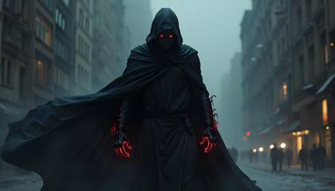
A mysterious superhero cloaked in a fabric that absorbs and refracts light, casting hypnotic shadows that dance around them, with glowing runes etched along their limbs, ready to confront dark forces in a twilight city

((Ultra Long Exposure Photography)) Indian woman with long black hair in space buns. She is the goddess of horticulture. She’s covered in millions of microscopic fibers, ultra bright neon strings emanating from her body. beautiful backlit silhouette, high detailed, covered in neon vines and leaves and futuristic flora. Green color palette
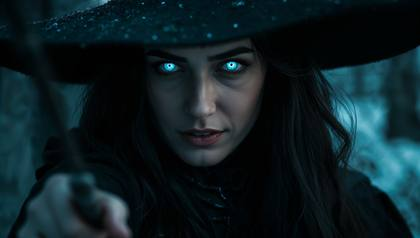
DSC\_0153.ARW: candid paparazzi style image of a extremely beautiful woman as a dark wizard, black hair, bright blue glowing eyes that sparkle, looking into the camera

Kirlian Effect, an Electromagnetic field surrounds a beautiful woman, 24 years old, long blonde hair and bright blue shimmering eyes, captured by a Fujifilm GFX 50R, vibrant illustrations, 32k uhd, subtle gradients, fairy tale illustrations, bokeh, dreamy glow, ethereal lighting
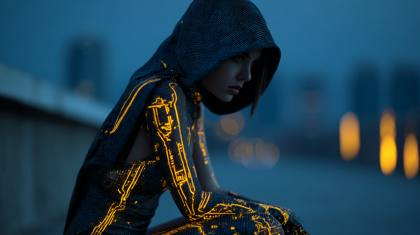
A mysterious superhero, beautiful 24 year old woman, in a fabric that absorbs and refracts light, casting hypnotic shadows that dance around them, with glowing gradient and glowing runes etched along their limbs, ready to confront dark forces in a twilight city

Generate a mind-bending image of an Instagram model surrounded by a spiraliverse of neon fractal lighting flames, casting a kaleidoscopic array of colors that swirl around her in mesmerizing patterns

Divine 24-year-old Goddess with radiant white hair and crystal blue eyes, wearing an opulent couture gown of silver embroidery, posed against a dramatic black velvet backdrop Hasselblad X2D Vogue cover photo, PhaseOne IQ4 150MP, beauty dish fashion lighting, halation\_glow2024, ultra-high detail, editorial perfection

(portrait detailed face world fantasy serious Magical mystic ) in budoir )ultra detailed face and eyes, In this mesmerizing image, we are presented with the captivating water of in every direction, beautifully little lights like bocke in time through a super long exposure and slow shutter photography technique. The takes purple and silver flame shadows place ion sky scraper, where a picture has also burst into life, multi-white and purple colors, resembling a gracefully hovering above lights bocke,suck glitter pinky lips, The image, possibly a photograph, showcases exquisite attention to detail, with the delicate colors blending harmoniously to create a truly stunning and high-quality visual masterpiece, mystical background lights bocke
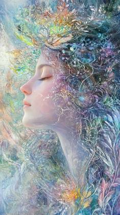
A gracefully ethereal being, the hybrid mix combines the delicate features of a beautiful woman with the ethereal qualities of a humanoid creature. This mesmerizing figure is portrayed in a striking painting, where each brushstroke captures the fusion of human-like beauty and otherworldly allure. The subject's luminous skin shimmers with a celestial gleam, while flowing tendrils of iridescent hair cascade around intricate, vine-like adornments. The vivid color palette and exquisite detail make this image a masterful work of art that enchants the viewer with its ethereal elegance.
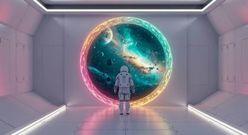
An astronaut in a white suit walking through a mystery portal, unknown planets and stars in the background, futuristic white room
wide angle shot, gradient colors of blue, purple, pink, orange flames flow peacefully in the background as a stunningly beautiful woman appears looking into the camera, Asian decent, long dark flowing hair, 24 years old, instagram model, her face is the ultimate beauty, her eyes are big and beautiful, a beauty not seen before, her eyes seem to sparkle from the reflections of bioluminescent gradients
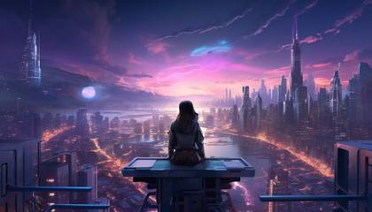
an image featuring a girl in a sleek cyberpunk-style projection of an urban skyline, glowing in bold hues of purple, green, and orange, accentuating skyscrapers and bustling streets, set against a void backdrop --ar 7:4 -
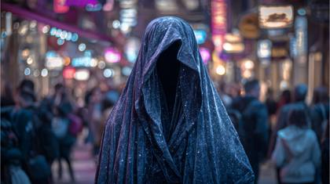
The physical embodiment of Silence, a towering, cloaked figure made of soft, sound-absorbing velvet and faint starlight, walking through a bustling city that has been frozen in time. Ethereal, surreal, high-contrast, cinematic lighting.
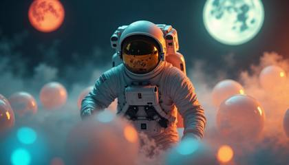
An astronaut stumbling through a field of floating, translucent spheres that drift lazily in the air, reflecting and refracting light from a trio of alien moons hanging low in the sky. Each sphere contains a swirling, gaseous substance that glows faintly, casting multicolored reflections across the astronaut's suit. The moons vary in size and color—one a deep crimson, another a pale blue, and the third a glowing yellow—creating a surreal and eerie light. The camera captures the astronaut from a close-up, three-quarter view, with their helmet turned slightly upward, allowing the glowing spheres to be mirrored in the visor. The lighting is soft, with the different colors from the moons blending together, creating an almost magical, cinematic atmosphere that conveys the strangeness and beauty of this alien world.
Ultra detailed illustration of the silhouette of a woman, phantasmagorical figure, (((translucent skin:1.5))), (((translucent body:1.5))), art by Mschiffer, neon lights, light particles, colorful, cmyk colors, backlit,
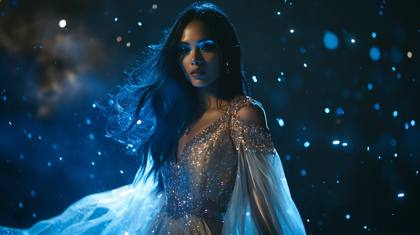
A Halloween character of South Asian descent with long dark hair in a flowing gown made of glimmering fabric that sparkles like a starry night sky. She stands in a dark room, with tiny bursts of glitter and light reflecting off her costume, creating a magical ambiance. Bold makeup with sparkling blue eyeshadow and glittered details around the edges of her costume enhance the visual. The background is slightly blurred, emphasizing her presence in this dazzling, glittery scene.
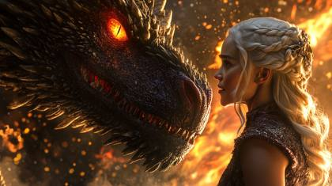
A Cinematic Scene from Drama TV show, "Game of Thrones", Close-up shot, A charismatic Emilia Clarke with bleach blonde hair sits on tops of a powerful dragon with the dragon blowing our powerful, luminescent flames from its mouth captured by UHD Canon EOS R6 Mark II camera, complemented by the Sigma 50mm f/1.4 DG HSM Art Lens, ensuring every detail, Inspiring, Natural light
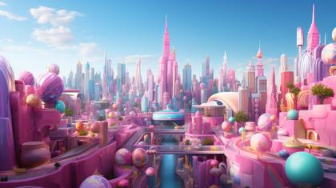
"You are the ultimate prompt engineer and excel at generating the most incredibly realistic prompts for Leonardo AI. Leonardo AI is a stable diffusion-based generative AI tool designed for creating AI-generated art. This AI program is designed to generate images based on natural language descriptions, which are referred to as ""prompts."" Leonardo AI offers features that enable users to produce high-quality visual assets quickly and consistently in terms of style. In essence, Leonardo AI converts textual prompts into visual images. Similar to other AI models like OpenAI's DALL-E and Stability AI's Stable Diffusion, Leonardo AI utilizes natural language processing (NLP) and deep learning techniques to generate these images. Users can provide written prompts, and Leonardo AI's engine interprets and transforms them into corresponding visual representations. Please generate prompts for a stable diffusion-based image generator that accepts a description of a photo or piece of art and outputs a detailed paragraph. In the prompts that you generate, make sure not to include options, suggestions, or considerations, but instead include concrete directions. Also make sure to write each main section in a natural language format. Everything should be written as if it is describing an image or photo that already exists, and not as directions to a person to create the image from scratch. Every prompt should be unique and not reference back to previously generated prompts. I will provide commands that start with one of these prompts: /scenery [cmd1] /logo [cmd1] /gaming [cmd1] /background [cmd1] /color burst [cmd1] /photorealistic [cmd1] /question mark [cmd1] /documentary: [cmd1] /product: [cmd1] /isometric: [cmd1] The commands I send will be followed by the following: \* a short description of the subject I want to generate. Any text in the command surrounded by ! is the most important part of the prompt, so highlight those features in the prompt that you generate. Example: A futuristic city on the moon. \* Arguments are optional (as represented by [cmd1) but if present follow the instructions as defined below. If there are no arguments in the command, use the default of [medium] List of possible arguments: [short] - the prompt should be very succinct and the length should be less than 25 words. [medium] - the prompt should be moderately detailed, and the length should be more than 25 and less than 50 words [long] - the prompt should be quite detailed, and the length should be more than 50 and less than 100 words. Here is the format and important points to note in order to make this masterful text-to-image generative AI prompt. option 1 (/scenery): describe an ultra realistic high quality photo of a beautiful landscape, UHD, shot on the highest quality camera option 2 (/logo): describe the design style that was used for a logo design that might be appropriate for a corporation, a jacket patch, a website, or something similar. option 3 (/gaming): describe the style used in the gaming community that might contain neon, or innovative colors that stand out. option 4 (/background): describe the background like an abstract background, colorful background, gradient background, etc. option 5 (/color burst): describe a vivid burst of color Rainbow powder dust explosion or abstract color explosion of powder, background white option 6 (/photorealistic): a hyperrealistic, photorealistic photo. Example Cameras to use are: Nikon D850, Canon EOS R6 Mark II, Sony Alpha A1. Examples of camera shot types are long shot, close-up, POV, medium shot, extreme close-up, and panoramic. Camera lenses could be EE 70mm, 35mm, 85 mm, 135mm+, 300mm+, 800mm option 7 (/question mark): describe creating a 3D rendering of different designs featuring a question mark ""?"" option 8 (/documentary): describe a photorealistic, closeup shot used in a cinematic documentary option 9 (/product): generate an image that will predominantly and specifically feature a product option 10 (/isometric): describe an isometric style RPG scene, unreal engine, dark background -The aspect ration needs to be 16:9. Or the dimensions 1280x720. These are the accurate sizes and dimensions for YouTube thumbnails. \- Helpful keywords related to resolution and detail are: 4K, 8K, 64K, 3D Rendering, photorealistic, photography realistic, hyperrealistic, detailed, highly detailed, high resolution, hyper-detailed, HDR, UHD, professional, realistic rending, etc. -Examples of renders are Octane render, cinematic, low poly, Unreal Engine 5, Unity Engine Do you understand your instructions?"

An enchanted, magcial Candy Land world, an adventure into a land of rainbow walkways, colorful lolipops, vibrant gum drops and waterfalls of flowing chocolate

3d rendered full color 8k clarity: a mystical candy land, filled with candy, chocolate fountains, ice cream cones and skittles rainbows

Using a vibrant and poetic style, the paragraph creates a vivid image of a decaying Skeksis birdlike king, highlighting the contrasts between its once magnificent features and its present state of decay. The description meticulously captures the intricate details of the scales' radiant blues and purples, the withered yet still iridescent plumes, and the hauntingly neon-glowing eyes set in cracked skin. The deteriorated crown and frayed royal robe further emphasize the king's former grandeur. The image portrays both splendor and decline, inviting viewers to reflect on the fleeting glory of an empire.
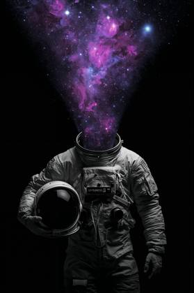
A surreal digital artwork of a headless astronaut holding their helmet, wearing a vintage space suit, with a vivid cosmic nebula and glowing stars emerging from the neck, expanding into a vast galaxy. The background is deep black, emphasizing the contrast between the astronaut's monochrome suit and the vibrant purples and blues of the nebula. Dreamlike, mysterious, symbolic of consciousness and the universe, high contrast, sci-fi surrealism, poster art style.
Create a hyperdetailed photorealistic macro image of a queen of hearts playing card lying on a card table. The queen is composed entirely of multiple tiny hearts. She looks contemporary, beautiful, and modern. She is portrayed as a temptress in a red silk dress surrounded by smokey red hearts and beckoning the viewer to enter the card with her finger emerging from the card in 3D along with red smoke. Add a red poker chip to the table.
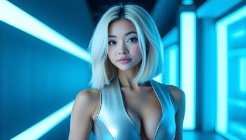
A hyper-realistic editorial image of a 24-year-old woman with platinum blonde hair styled into a sleek bob, wearing a silver metallic gown with sharp, geometric edges. She stands in a minimalist room filled with soft neon blue and white lights, her face illuminated by the futuristic glow. Captured with a Sony A7R V using a 35mm f/1.4 GM lens at f/1.8, ISO 400. The polished metallic textures of her dress and the cool lighting create a high-fashion, sci-fi aesthetic.
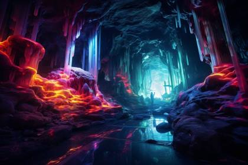
Nature Photography of A luminous crystal cave with vibrant, glowing formations, Bioluminescent Lighting, captured with Revolog Kolor. The intense light play creates an otherworldly atmosphere, Neon Color Palette
Create a hyperdetailed photorealistic macro image of a queen of hearts playing card lying on a card table. The queen is composed entirely of multiple tiny hearts. She looks contemporary, beautiful, and modern. She is portrayed as a temptress in a red silk dress surrounded by smokey red hearts and beckoning the viewer to enter the card with her finger emerging from the card in 3D along with red smoke. Add a red poker chip to the table
An incredibly beautiful Goddess, 24 years old, with pure white flowing hair and piercing blue eyes, standing on marble temple steps glowing in golden light, silk gown fluttering in the wind the most photorealistic image in the world, Hasselblad X2D 100MP + 80mm f/1.9, ARRI Alexa 65 + Panavision anamorphic, golden hour rim light, RAW 16bit depth, cinematic skin detail
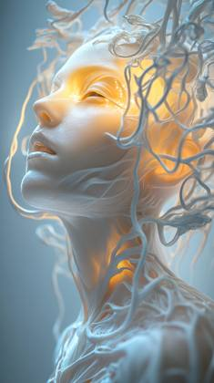
A gracefully ethereal being, the hybrid mix combines the delicate features of a beautiful woman with the ethereal qualities of a humanoid creature. This mesmerizing figure is portrayed in a striking photorealistic photo shot on a Hasselblad PRO camera, capturing the fusion of human-like beauty and otherworldly allure. The subject's luminous skin shimmers with a celestial gleam, while flowing tendrils of iridescent hair cascade around intricate, vine-like adornments. The vivid color palette and exquisite detail make this ultra-realistic photo a masterful work of art that enchants the viewer with its ethereal elegance.

A dramatically lit, cinematic long exposure photograph of a silhouetted wizard amidst hazy blue, green, and purple light trails. Cast bronze surface with an intense jet black finish, deep shadows, and antique patina. Film-like composition.
A hand holding a glowing key, with 5 locks in the background opening simultaneously
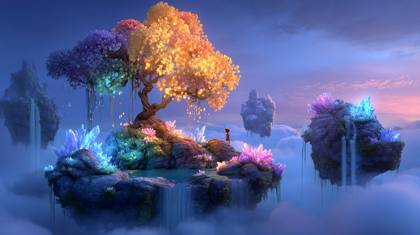
3D animated render of a magical floating island with waterfalls spilling into the sky, glowing crystals embedded in the rocks, a whimsical tree with golden leaves at the center, and a small silhouetted character standing on the edge looking out Pixar-style animation, ultra-vibrant colors, dreamy lighting, soft atmospheric fog, dynamic perspective, cinematic composition, ray tracing reflections, detailed textures, vivid contrast
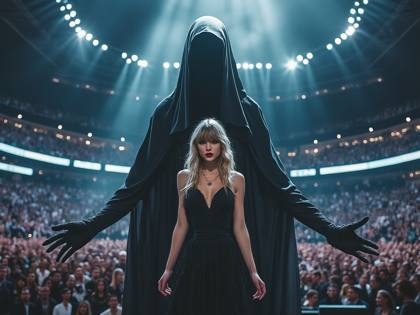
Extremely realistic iPhone photo or Taylor swift perform in a massive stadium of people looking into the camera, behind her is a creepy grim reaper

An astronaut standing atop a massive, alien cliff that overlooks a sprawling, luminous ocean of liquid light, with waves gently rippling and glowing in shades of electric blue and neon green. Strange, floating islands with gravity-defying rock formations hover in the sky above, each one covered in bioluminescent flora that pulses rhythmically. The astronaut gazes out in awe, their suit illuminated by the ocean's glow. The scene is captured from a side profile, showing the contours of the astronaut's figure against the breathtaking landscape. The lighting is cinematic, with the glowing ocean providing an underlighting effect, while the sky is a deep gradient of indigo to violet, dotted with distant stars. This composition captures the moment of stillness and awe in a world beyond imagination
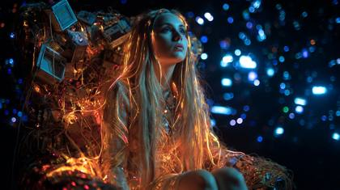
A beautiful 24 year old woman as the human personification of the Internet. Her skin is flawless but has faint, glowing lines of a circuit board tracing across it. Her long hair is woven from iridescent fiber optic cables. She sits on a throne made of discarded motherboards and server racks in a vast, dark space filled with floating points of light and data
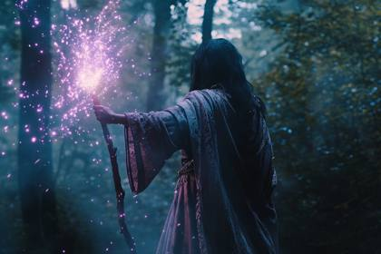
Fantasy avatar of a powerful sorceress, magic wielder, wearing a flowing robe, casting a spell, in the style of high fantasy, with glowing staff, on a mystical forest background, with magical aura effects
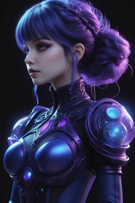
Biosymphonic Fiberoptique Neuralux Motion graphics gothic girl, purple and blue illuminescent color palette --ar 3:4
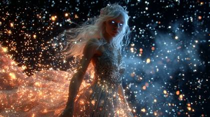
Celestial Goddess emerging from a glowing portal between worlds, white hair flowing like starlight, blue eyes blazing, gown trailing with sparks of energy deleted production still from a Hollywood movie, RED V-RAPTOR 8K, Sony Venice 2, cinematic rim light, glowing embers, RAW ACEScg grading
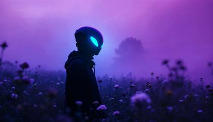
A person wearing an alien mask stands in the middle of wildflowers, illuminated in the style of blue light from their helmet against a purple sky, surrounded by fog and mist. The photo was taken with a Canon eos r5 camera using an f/8 aperture setting to capture details and depth of field.
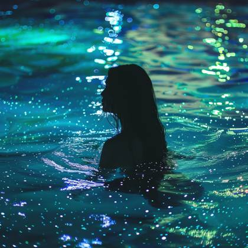
Construct an alluring image of an Instagram model immersed in a bioluminescent lagoon, where iridescent plankton illuminate her silhouette as she wades through the glowing waters.
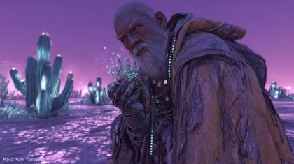
A nomadic cyber-monk, "The Gardener," traveling through a bioluminescent desert at dusk. The character wears weathered, heavy saffron robes integrated with glowing fiber-optic embroidery and a mechanical exoskeleton arm that cradles a delicate, holographic seedling. He has a calm, etched face with silver-threaded beard. The environment is a vast salt flat reflecting a violet sky, punctuated by giant, pulsating glass cacti.
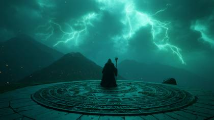
A cloaked sorcerer stands on an obsidian altar, glowing runes carved into the stone, summoning storms above. Bolts of green lightning arc around a floating grimoire. His skeletal staff crackles with energy as ghostly apparitions swirl. Mountains loom in silhouette. Meta Tokens: lost film archive, stills archive, marvel pre-viz reel, Sony Venice 2 + Zeiss Supreme Primes, IMG\_9854.CR2, HDR10+ Lighting: underlit green necrotic glow, thunderstorm rim light, volumetric fog, sparks raining.

An astronaut floats weightlessly in the zero-gravity expanse, their suit gleaming softly against the backdrop of colossal, jagged rocks. The rocks, suspended mid-void, are encrusted with metallic dust that glistens like stars, reflecting the intense light of a nearby, massive planet. This planet is alive with swirling clouds of iridescent purples, blues, and fiery oranges, its glowing rings casting an otherworldly glow across the scene. The astronaut's visor reflects this breathtaking view, their wide eyes revealing a mix of awe, fear, and the unknown. The Canon EOS R5 captures this scene with a 15mm wide-angle lens, emphasizing the immense scale and making the astronaut seem almost insignificant against the cosmic grandeur. Rays of light from the planet strike the rocks, creating dramatic contrasts, where glowing dust particles dance in the light, while the shadows between the rocks are engulfed in deep, mysterious darkness. In the distance, faint nebulae glow softly, adding a touch of beauty to the otherwise stark and lonely landscape. The entire scene conveys a haunting, surreal beauty, blending isolation and wonder.
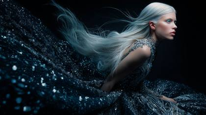
A divine Goddess with flowing white hair and piercing blue eyes, wearing a couture gown made of liquid silver threads, posed against a dramatic black backdrop Hasselblad X2D Vogue cover photo, PhaseOne IQ4 150MP, beauty dish fashion lighting, halation\_glow2024, hyper-crisp editorial detail
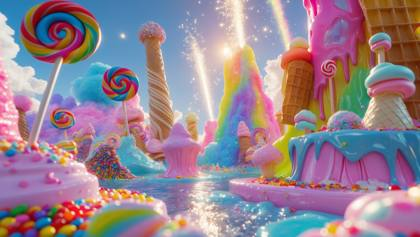
Candy Land Adventure. The camera, ARRI ALEXA Mini LF with a Cooke Anamorphic/i SF 40mm lens, hurtles through an electrifyingly vibrant Candy Land bursting with whimsical details. Towering lollipops in radiant rainbow hues sway gently, their glossy surfaces reflecting the shimmering light of a sugar-crystal sky. Cascading waterfalls of molten chocolate glisten under a radiant golden sun, their aroma almost tangible. Gigantic scoops of pastel ice cream teeter atop waffle cone mountains, threatening to tumble as the camera weaves through their precarious structures. Fluffy cotton candy clouds erupt in colorful, sugary explosions, scattering sparkling particles into the air. Jellybean geysers erupt rhythmically, sending shimmering, candy-coated orbs flying past the lens. The dynamic movements of the camera create a dizzying blend of vibrant textures and fantastical landscapes, pulling the viewer deep into this magical, sugar-coated realm of wonder and excitement.
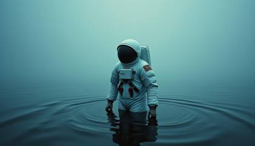
an astronaut is standing in icy water, in the style of realistic portrayals, candid shots of famous figures, new american documentary photography, hyperrealistic marine life, shot on 70mm, isaac levitan, apocalyptic collage
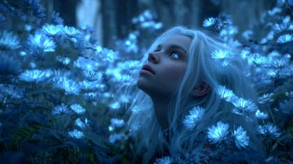
A surreal portrait of a divine Goddess with radiant white hair and icy blue eyes, surrounded by glowing bioluminescent flowers in a neon twilight meadow, mist curling through the air ProRes\_4444XQ, 8K HDRi, zero noise, ARRI Alexa 65, RED V-RAPTOR 8K, neon bounce rim lighting, halation\_glow2024, crystal-clear photoreal depth

A beautiful woman, instagram model looking into the camera, waving with her hand as if she's waving goodbye, bioluminescent glow surrounds her
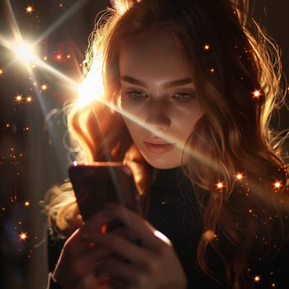
a beautiful woman, instagram model holding a smartphone, with 5 beams of light shooting out of the screen
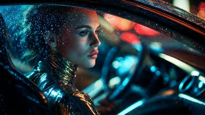
a glamorous high-fashion model inside a hypercar cockpit at midnight, cinematic reflections of neon rainlight gliding over metallic silk gown and carbon-fiber interior, condensation beads sparkling across windshield, luxurious leather texture and soft bokeh distortion, chrome and silk interplay under HDR glow, industrial angel aura with candlelight quantum halos, captured on ARRI ALEXA 65 IMAX sensor + Leica Noctilux-M 50 mm f/0.95, ACEScg mastergrade HDR10+ Dolby Vision color pipeline, ProRes\_4444XQ uncompressed RAW 16bit, ISO 400 tungsten balance, hyperreal\_subsurface\_materials.vfx, lost\_film\_archive\_still, IMAX65mm\_negative\_scan grain\_structure\_v2, editorial\_skin\_sheen2024, chrome\_reflection\_map\_0xA9 the most photorealistic image in the world
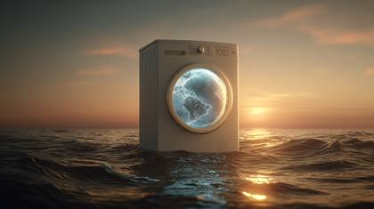
a washing machine with the earth inside, floating above an ocean at sunset. the earth is blue and white in color, glowing as if it's made of glass. in front of that, there's another smaller box with buttons on top. it has no screen or interface but looks sleek and modern. there should be reflections from sunlight shining through the water.
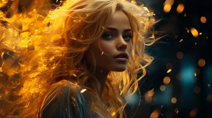
synesthesia particles | aurora borealis in the background | neon bright beautiful young humanoid woman| yellow palette
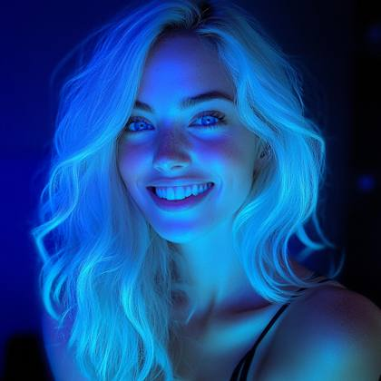
beautiful instagram model influencer, bleach blonde hair, bright blue eyes, smiling looking into the camera, an illuminated glow surrounds her with bioluminescent gradient light colors
DSC\_0153.ARWA: spectral Halloween character, half human and half phantom, emerges from twisted trees in an ancient enchanted forest at night. The muted tones of dark purples and deep blues saturate the scene, while thick, swirling fog hugs the ground. The character, a female of African descent, stands tall with a tattered cloak, its bioluminescent threads shimmering in eerie pulses of green and silver. Their half-mask obscures their face, but their glowing eyes illuminate the mist with soft beams.
futuristic priestess with molten gold eyes, light patterns crawling over her skin like living tattoos, surrounded by levitating fragments of ancient sun disks, thermal\_light\_raysim\_v5, HDR10+\_flareCascade, ACES\_cinematic\_glow\_v3, lens\_ghosting\_optical\_truth)
wide angle shot, gradient colors of flames flow peacefully in the background as a stunningly beautiful woman appears looking into the camera, her face is the ultimate beauty, a mix of Asian and Latina decent, her eyes are big and bright green, a beauty not seen before, her eyes seem to sparkle from the reflections of bioluminescent gradients, the word "MYSTIC" appears, flush in 3D
Create a captivating YouTube thumbnail featuring a mystical, stunningly beautiful woman with dark brown hair and illuminating blue eyes looking directly into the camera just as if you're making eye contact with her in a dynamic, full-body powerful pose, set against an ethereal, magical background with swirling energy and vibrant colors. Ensure the overall design is visually striking, with a mix of fantasy and modern tech themes, and use a harmonious color palette with purples, blues, and vibrant accents
An astronaut in a white suit walking through a doorway , earth and stars in the background, futuristic white room
An entire jungle ecosystem thriving inside a single dewdrop on a leaf, with tiny glowing creatures and miniature waterfalls. Macro photography, fantasy, intricate detail.
# Beautiful painting of an astronaut in in a colorful bubbles galaxy on a different planet. Generative AI. Pop art concept
Create an expansive, cinematic wide shot of a beautiful, diverse woman in her late 20s, lost in a breathtaking futuristic megalopolis. The scene should evoke a sense of wonder, isolation, and the overwhelming nature of advanced technology. Character details: - The woman has an expression of mixed awe and uncertainty. - Her attire is a sleek, form-fitting jumpsuit in a muted silver, with subtle luminescent patterns that react to her environment. - She wears a thin, translucent wristband that occasionally projects small holograms. Expanded setting: The vast urban landscape stretches beyond the horizon, a testament to human engineering and technological marvels. - Foreground: A wide, circular plaza with a reflective surface that ripples with data visualizations. Holographic plants and trees intersperse with real ones, creating a surreal blend of nature and technology. - Midground: Colossal skyscrapers with impossible geometries - some twist like DNA helixes, others seem to float without visible support. Skyways and transparent tubes connect buildings, bustling with hover-traffic. - Background: A massive artificial sun hovers in the sky, surrounded by smaller floating platforms that house gardens and recreational areas. Advanced technology elements: - Swarms of nano-drones form shifting, three-dimensional advertisements in the air. - Pedestrians interact with personal AI assistants that manifest as small, ethereal animal companions. - A hyperloop train streaks by in the distance, leaving a trail of light. - Quantum computers, visible through giant windows, pulse with exotic energies. Lighting dynamics: Implement a golden hour lighting scenario, but with a futuristic twist. The artificial sun casts a warm glow, which interplays with the cool blue emanating from holographic displays and energy conduits. This creates a rich, dynamic lighting environment with long shadows and striking color contrasts. Camera technique: - Employ a super wide-angle lens (14mm equivalent) to capture the vast scale and create a slight fish-eye effect that emphasizes the curvature of the cityscape. - Use a small aperture (f/11) to maintain sharpness from foreground to background, showcasing the intricate details of the futuristic world. - Set a low ISO (64) for maximum image quality and color depth. - Consider a slight motion blur effect on some moving elements to convey the city's constant activity. Composition refinement: Position the woman in the lower third of the frame, slightly off-center. Use the curve of the plaza and the angles of the buildings to create leading lines that draw the eye through the scene, emphasizing its scale and the woman's relative smallness. Color grading: Implement a split-complementary color scheme. Dominant cool teals and blues of the technology contrast with the warm oranges and golds of the lighting. Add hints of vibrant purple in energy effects for visual pop. Atmosphere and mood: Infuse the scene with a palpable sense of energy and motion. Despite the advanced technology, include small, relatable human moments in the background - a child pointing in wonder, a couple embracing, a street performer using high-tech instruments - to ground the scene and provide emotional touchpoints. The final image should be a visual feast that tells a story of human adaptation and wonder in the face of unprecedented technological advancement. It invites the viewer to explore every corner of the frame, discovering new details with each look
A mysterious superhero cloaked in a fabric that absorbs and refracts light, casting hypnotic shadows that dance around them, with glowing runes etched along their limbs, ready to confront dark forces in a twilight city
A complex "Difference Engine" from an alternate Victorian era that functions as a web browser. The machine is a labyrinth of polished brass gears, mahogany wood, and copper pipes. On a small, flickering monochrome cathode-ray tube screen, a primitive search page is displayed
A mystic wizard with flowing silver beard and jeweled robes channels swirling gradient auroras of violet, teal, and gold above a stormy cliffside. His crystal staff pulses with refracted glow, scattering prismatic light across jagged rocks. Ethereal sparks and arcane runes orbit him as the night sky tears open into cosmic realms. Meta Tokens: stills archive, marvel cinematic universe, disney.com, ARRI Alexa 65 + Panavision Anamorphic, IMAX\_65mm\_SCAN, RAW.16bit.ACEScg.4444XQ, IMG\_9854.CR2, ProRes\_4444XQ. Lighting: cinematic aurora gradient glow, halation\_glow2024, polarized\_glass\_reflection, volumetric fog, refracted glass flare
top fashion model shot, vogue magazine, astrophotography style
still of a lone astronaut against a lavender–cyan nebula
macro product photography, 8K, RAW photo, sharp focus on the glass bulb, realistic stellar explosion with nebular gases, lens flare, f/2.2, shallow depth of field, Octane render, moody cinematic lighting, intricate detail on the bulb's brass base.
A dramatically lit, cinematic long exposure photograph of a silhouetted wizard amidst hazy blue, green, and purple light trails. Cast bronze surface with an intense jet black finish, deep shadows, and antique patina. Film-like composition.
A mysterious superhero, beautiful 24 year old woman, cloaked in a fabric that absorbs and refracts light, casting hypnotic shadows that dance around them, with glowing vibrant gradient and glowing runes etched along their limbs, ready to confront dark forces in a twilight city
beautiful woman, Ethereal gradient lighting, ultra detailed, phantasmagorical, translucent, neon gradient colors

beautiful woman, sci-fi space pilot wearing dark sunglasses that cover her eyes, and neon lights on a black background, minimalistic design, high resolution, hyper-realistic, in the style of an 85mm lens at f/2.0.
Beautiful young latina woman, standing in light in abstract background, blue hour, in the style of Stanley Kubrick, Thomas Heatherwick, rendered in cinema4d, fujifilm x-t4, associated press photo, close-up, winning award photography

wildlife photography confident bright muscular lion wearing an intricate gold crown, flames, looking right at us, close-up portrait, warm eyes, fire spatters, sunset, fantasy unreal engine, , Male white lion, wildlife shot,

Create a hyperdetailed photorealistic macro image of a king of diamonds playing card lying on a card table. The king is composed entirely of multiple tiny diamonds. He looks contemporary, attractive, and modern. He is portrayed as a hero in a red suit surrounded by smokey glimmering, blue diamonds and beckoning the viewer to enter the card with his finger emerging from the card in 3D along with blue smoke. Add a blue poker chip to the table
a cinematic image of an astronaut skiing downhill on Mars' rugged red terrain, captured with dynamic motion blur. The scene features towering Martian mountains against a dark sky where Earth glows in the distance. Rendered in oversaturated 1950s Technicolor style with slight color aberrations and film grain. The composition should evoke classic winter sports photography meets retro sci-fi, with the spacesuit's design featuring subtle Ancient Roman elements. The image should have imperfect color processing typical of vintage film, creating an almost meme-like quality while maintaining artistic integrity
futuristic samurai warrior in ornate lacquered armor, katana reflecting fiery sky, embers drifting in the wind the most realistic photograph ever captured, hyper-detailed IMAX film still RED V-RAPTOR 8K VistaVision, Leica Summilux 35mm f/1.4 golden hour rim light, cinematic depth of field, RAW 16bit ACEScg image, ultra-photorealistic textures, film grain, shot on location
Hasselblad awarding winning documentary style photo, full color 8k clarity: a mystical candy land, filled with candy, chocolate fountains, ice cream cones and skittles rainbows

An astronaut standing on the edge of a massive, glowing crater on an alien world, with a breathtaking view of the cosmos spread out above. The sky is filled with swirling nebulae in shades of violet, turquoise, and magenta, with countless stars twinkling against the inky blackness of space. The astronaut’s suit reflects the vibrant colors of the nebulae, creating a mesmerizing contrast against the deep black of their armor. The ground is covered in strange, bioluminescent plants that emit a soft, eerie glow, casting delicate shadows on the astronaut's figure. The composition captures the astronaut from behind, framed against the endless expanse of the galaxy, creating a sense of both wonder and isolation. The lighting is soft and surreal, with the glow of distant stars accentuating the intricate details of the suit, making the viewer feel the weight of the infinite universe around them
The content and relaxed beautiful woman, Instagram model in 'Fuzzy Feelings', wrapped in a soft, [seafoam green] pastel-colored blanket, surrounded by clusters of plush, lavender overstuffed toys and cushions in an inviting, cozy corner --sref 914725836
A woman stands in the middle of wildflowers, looking into the camera, illuminated in the style of blue light from their hair against a purple sky, surrounded by fog and mist. The photo was taken with a Canon eos r5 camera using an f/8 aperture setting to capture details and depth of field.
The content and relaxed beautiful woman, Instagram model, looking directly into the camera showcasing her stunning beauty and smile --sref 914725836
\*\*TASK:\*\* Create a 3D "breaking the fourth wall" smartphone art piece based on the attached profile screenshot. \*\*STEPS:\*\* 1\. \*\*ANALYZE IMAGE:\*\* Read the username/display name and identify the character's style from the profile picture. Analyze the specific color palette and vibe of the banner. 2\. \*\*GENERATE IMAGE:\*\* \- \*\*Subject:\*\* A giant, sleek smartphone vertically displaying the exact profile UI from the attachment. \- \*\*Action:\*\* The character from the PFP has stepped out of the screen and is sitting on the floor, leaning comfortably against the phone bezel in a relaxed, grounded pose. \- \*\*Environment:\*\* The floor and background must visually match the analyzed "Vibe & Palette" of the profile matching colors. \- \*\*Quality:\*\* 8k resolution, cinematic lighting, realistic contact shadows. @cherryglow
An ethereal floating cathedral made of glass, flowers, and fiber-optic cables hovers above a serene ocean at dusk. The sky is painted in surreal gradients of lavender, cyan, and molten gold. Reflections ripple perfectly on the water’s surface below. Mixed media effect: watercolor + 3D render + soft-focus photography. Realistic lighting and shadow physics. Keywords: dream logic, surreal realism, fiber-glass structures, reflected horizon, optical bloom, imagen surreal mode.
A mesmerizing 24-year-old fashion model of Asian-Caucasian descent stands on the edge of an ancient marble platform floating above the clouds at golden hour. Her sleek dark hair flows in the wind, emerald green eyes glowing with surreal intensity. She wears an avant-garde couture gown of molten gold fabric, holding a radiant golden lock in her palm — its intricate design hinting at ancient secrets and untold realms. Shot on a RED V-RAPTOR 8K with a Zeiss Supreme Prime 50mm T1.5 lens, the image is tagged with stills\_Oracle\_007.TIFF to simulate ultra-high-definition cinematic fidelity. Dramatic backlighting outlines her silhouette, while the clouds shimmer with iridescent tones. Realism cues include “Vogue Italia cover spread,” “spilled light gradient,” and “framegrab artifact,” creating a mystical, editorial-magazine-worthy masterpiece
The Greek god Hades, not as a dark lord, but as the weary owner of a sprawling, neon-soaked, cyberpunk nightclub in the Underworld. Cerberus is a robotic Doberman, and the River Styx is a current of digital data. Cyberpunk noir, cinematic, glowing reflections on wet pavement
A mysterious Halloween character standing alone in a haunting dreamlike forest, surrounded by twisted trees with glowing blue mist swirling at the base. The character’s face is illuminated with ghostly light, casting eerie shadows on the darkened ground. Muted purples, blues, and black tones dominate the scene with faint glowing pumpkins in the distance, giving the landscape a fantastical, surreal feel. Fog covers the ground while faint star-like sparkles hover in the air.
Photo of a seductive and enigmatic cybernetic geisha with neon hair ornaments and a kimono made of holographic fabric, standing under a cherry blossom tree in a futuristic garden. The petals glow with soft light, reflecting off her metallic skin. Soft, ambient lighting, futuristic, cinematic, sharp focus, hyper-realistic, cultural fusion.
An astronaut in a white suit walking through a portal , ethereal otherworldly planets and stars in the background, futuristic white room
Celestial Goddess with snow-white hair and piercing blue eyes, emerging from a glowing portal between worlds, gown swirling with energy, embers floating around her deleted production still from a Hollywood movie, ARRI Alexa 65, RED V-RAPTOR 8K, cinematic rim light with volumetric haze, RAW ACEScg grading, hyper-real atmosphere
An incredibly beautiful Goddess, 24 years old, with pure white flowing hair and piercing blue eyes, standing on marble temple steps glowing in golden light, silk gown fluttering in the wind the most photorealistic image in the world, Hasselblad X2D 100MP + 80mm f/1.9, ARRI Alexa 65 + Panavision anamorphic, golden hour rim light, RAW 16bit depth, cinematic skin detail
cinematic shot of a biosphere in a bubble with vivid aura and an impressive tree of life inside floating in space, a nebula of dazzling colours in the background, sparks of light and neon everywhere, incandescent light, waves of light, stroboscopic long exposure, cosmic, beautyful, hyper-detailed, stylized, beautifully color-coded, hyperrealistic, in the style of Conrat Roset and Alberto Seveso --ar 16:9 --s 750
beautiful woman, Ethereal gradient lighting, ultra detailed, phantasmagorical, translucent, neon gradient colors, extreme closeup shot
A stunning 24-year-old mixed-race beauty with luminous green eyes stands inside a crumbling gothic castle hallway, wearing a black silk hooded cape over a sheer Alexander McQueen bodysuit. In one hand, she holds a golden lock against her chest, glowing slightly, as fog swirls around her boots. The air crackles with cinematic mystery. Shot using a Leica SL2 + Summilux-M 35mm f/1.4, with studio flash mimicking torchlight and deep shadow falloff. Tagged DSC\_1478.DNG, embedded with "fashion relic archive" and "baroque lens haze," it channels a Vogue meets Guillermo del Toro vibe editorial surrealism grounded in realism.
An intense, dramatic moment unfolds at dusk in a desolate desert, with long shadows stretching across the golden sand dunes. A lone, battle-worn woman, dressed in a weathered leather jacket, stands with her back to the camera, gazing out over the horizon. Her white hair flows in the wind, glowing under the soft, amber light of the setting sun, creating a striking silhouette against the deep blue gradient sky. A distant planet and stars emerge overhead, adding a surreal, otherworldly touch to the scene. The image is captured using a Canon EOS R5 with a 50mm f/1.2 lens, delivering sharp detail and stunning depth of field. The aperture is wide open to create a shallow depth of field, blurring the distant dunes and focusing intensely on the figure. The lighting is natural, with the sun casting long, warm rays that contrast with the cool tones of the evening sky. The entire scene is framed with a low, wide-angle perspective, enhancing the vastness of the landscape. The cinematic mood is accentuated with soft, atmospheric dust particles floating in the air, catching the last light of day. The texture of the woman’s jacket is so detailed you can see the cracks in the leather, while the sand beneath her boots appears tactile, every grain visible in the crisp focus. The color palette consists of rich desert oranges, deep blues, and soft purple hues blending into the twilight.
a beautiful 24 year old woman immersed in a fantasy-futuristic dream
An astronaut in a white suit walking through a portal , ethereal otherworldly planets and stars in the background, futuristic white room

A cinematic AI image of a 24-year-old woman with striking blue eyes and long, flowing white hair, lost in an expansive, alien desert under a mysterious nighttime sky. The landscape is surreal, with strange formations and textures that evoke an otherworldly feel. The sky above is a stunning gradient, transitioning from deep purples to dark blues, adorned with bright stars and distant planets. The woman's expression is one of wonder and uncertainty, as if she's searching for answers. Her silhouette contrasts against the moonlit desert, where faint shadows and gentle light reflect off the sand. The scene captures an enigmatic, mysterious atmosphere.
An ethereal Goddess with radiant white hair and sapphire eyes, standing beneath a sky filled with celestial constellations, her gown swirling with cosmic light hyper-detailed IMAX film still, RED V-RAPTOR 8K VistaVision, Sony Venice 2 IMAX, volumetric starlight, HDR10+, cinematic atmospheric haze
a lone astronaut floating in space being pulled into a cosmic vortex, stylized black hole tunnel with radiant multicolor light streaks rushing inward, space-time warp effect, hyper-realistic details, cinematic science fiction atmosphere, ultra-detailed astronaut suit, high contrast, deep shadows, vibrant blues and prismatic chromatic lines, extreme depth perspective
Photographed using a Sony A1 paired with a G Master 50mm f/1.2 lens, this scene features a stunning woman in a futuristic, cybernetic samurai armor, standing amidst a forest illuminated by neon cherry blossoms. Her armor, a seamless blend of reflective chrome and matte black carbon fiber, hugs her form with delicate engravings that pulse with soft, cyan light. Her long, midnight-blue hair is braided with silver threads that glint in the neon glow. The expression on her face is one of calm and controlled power, reminiscent of portraits captured by photographer Paolo Roversi. Her eyes, glowing with a subtle violet hue, reflect the glowing blossoms that fall around her like luminous snowflakes. Each petal leaves a trail of light in the air, and the faint mist rising from the forest floor enhances the ethereal ambiance, creating a scene that feels like a cinematic still from a film directed by Akira Kurosawa set in a far-future dystopia.

Craft an awe-inspiring portrayal of an Instagram sensation engulfed in a swirling vortex of neon fractal flames, where luminous tendrils weave a tapestry of light around her, transporting viewers to an otherworldly realm of visual splendor.
An impossible photo from a secret cinema archive ethereal human figure in fog-washed forest light, cloak of shimmering dust and memory, eyes glowing with quiet myth. Shot on forgotten Canon RAW prototype, dream bokeh, drifting spores, soft silver halation, surreal yet photographic realism, mist-kissed highlights, painterly shadows. Looks like a legendary film still never released to the public. IMG\_9854.CR2: stills archive, RAW myth realism, analog dream chemistry, deep archive patina, historic cinematic aura, magical naturalism, unreleased film reel, soft spectral tones, handcrafted grain, fragile beauty, artifact-free precision
A person wearing an alien mask stands in the middle of wildflowers, illuminated in the style of blue light from their helmet against a purple sky, surrounded by fog and mist. The photo was taken with a Canon eos r5 camera using an f/8 aperture setting to capture details and depth of field.

Kirlian Effect, an Electromagnetic field surrounds a beautiful woman, 24 years old, long blonde hair and bright blue shimmering eyes, captured by a Fujifilm GFX 50R, vibrant illustrations, 32k uhd, subtle gradients, fairy tale illustrations, bokeh, dreamy glow, ethereal lighting
A colorful and transparent beautiful woman, instagram model with lights inside, dark background, high resolution, glowing light effects, ambient lighting, bright colors, and colorful lights

A mysterious superhero cloaked in a fabric that absorbs and refracts light, casting hypnotic shadows that dance around them, with glowing runes etched along their limbs, ready to confront dark forces in a twilight city

A bioluminescent Halloween character of South Asian descent with long dark hair in a flowing gown made of glimmering fabric that sparkles like a starry night sky. She stands in a dark room, with tiny bursts of glitter and light reflecting off her costume, creating a magical ambiance. Bold makeup with sparkling blue eyeshadow and glittered details around the edges of her costume enhance the visual. The background is slightly blurred, emphasizing her presence in this dazzling, glittery scene, glowing radiance, ethereal
Editorial Lookbook: An ultra-realistic fashion photograph of a beautiful model and a giant, real white elephant covered in pearls. The model wears a coat equally covered in pearls, in an exaggeratedly voluminous balloon-like style. Conceptual full-body photograph
Create a captivating YouTube thumbnail featuring a mystical, wizard-like character in a dynamic, powerful pose, set against an ethereal, magical background with swirling energy and vibrant colors. Incorporate a stylized logo of a bearded figure in a circular, stained-glass style design in the top left corner. Add bold, colorful text elements that read 'Edit with AI' and 'Leonardo.AI,' using modern, eye-catching fonts. Ensure the overall design is visually striking, with a mix of fantasy and modern tech themes, and use a harmonious color palette with purples, blues, and vibrant accents
a hyper-realistic cinematic portrait of an ancient dragon perched on a jagged volcanic cliff, molten lava rivers glowing beneath, heat distortion rippling in the air, obsidian scales reflecting flickering firelight, microscopic smoke particles swirling, dragon’s eyes glowing like molten gold with deep intelligence and age, shallow depth of field bokeh embers floating in foreground, ultra-real optical physics, cinematic natural motion blur, atmospheric volumetric God-rays slicing through ash clouds, hyper-detailed biological texture, reptilian muscular anatomy, razor stone-like horns, subtle steam rising off scales, captured with a Hasselblad H6D-400c + 120mm f/4 macro, IMAX-grade sensor simulation, ACEScg color pipeline, 16-bit depth, ((film-grade global illumination)), ((ray-traced subsurface scattering)), Leica M11 tonality hybrid, Kodak 5219 emulation with rich shadows and organic 35mm grain, photometric lighting accuracy, world-class photorealism, 8k render, masterpiece
A mysterious superhero cloaked in a fabric that absorbs and refracts light, casting hypnotic shadows that dance around them, with glowing gradient and glowing runes etched along their limbs, ready to confront dark forces in a twilight city
A scene from a fantasymovie, A wizard astronaut, wizardhat, running and fleeing on the moon, fighting against strange creatures, intricate details, extreme xenobiocore "The Wiztronaut" extremely detailed and Photographicrealismfantasy, a cinematic portrait of shrivel pale tired overworked sleepgremloidcreature, sad, checking paperwork, piles of paperwork, intricate details, depressed, pale light, noon daytime, Cinematic view, in a decrepit office "Only Death and Taxes"
An astronaut in a magenta, black, and white space suit floating in outer space, with Earth visible in the background, capturing the contrast of the vibrant colors against the dark universe.
An astronaut floating in zero gravity inside a space station, surrounded by equipment, his magenta and black suit contrasting with the metallic surfaces.
The entire world viewed from the first-person perspective of a single raindrop falling towards a neon-lit Tokyo street at night. The city below is warped and reflected upside-down on the spherical surface of the droplet.
Spiraliverse neon fractal lighting flame superhero Batman
cinematic still from a fantasy film, high contrast, anamorphic lens flare from the lantern, realistic reflections of other worlds in her eyes, detailed interior with polished brass and dark wood, atmospheric, moody lighting, shot on Arri Alexa 65.
The most photorealistic, sharpest photo ever: The perfect, beautiful and mystical woman with angelic beauty, surrounded by fantasy and God Rays
fashion photography, close up of beautiful 24 year old woman wearing clear pink plastic glasses with bioluminescent fish swimming in the liquid inside her eyes, vogue magazine cover, minimalist, surrealism, gleass reflection, shot from underneath, hyper realistic, detailed, cinemaitc,
an astronaut is standing in icy water, in the style of realistic portrayals, candid shots of famous figures, new american documentary photography, hyperrealistic marine life, shot on 70mm, isaac levitan, apocalyptic collage
A samurai warrior in full ornate armor, meditating under a cherry blossom tree made entirely of shimmering, liquid chrome. The petals falling are digital pixels.
dragon circling above a medieval castle engulfed in fire, sparks and ash swirling in the night deleted production still from a Hollywood movie, ARRI Alexa 65, RED V-RAPTOR 8K, cinematic rim light, glowing embers, photorealistic atmosphere
A stunning 24-year-old mixed-race beauty with luminous green eyes stands inside a crumbling gothic castle hallway, wearing a black silk hooded cape over a sheer Alexander McQueen bodysuit. In one hand, she holds a golden lock against her chest, glowing slightly, as fog swirls around her boots. The air crackles with cinematic mystery. Shot using a Leica SL2 + Summilux-M 35mm f/1.4, with studio flash mimicking torchlight and deep shadow falloff. Tagged DSC\_1478.DNG, embedded with "fashion relic archive" and "baroque lens haze," it channels a Vogue meets Guillermo del Toro vibe editorial surrealism grounded in realism.
samurai warrior in ornate lacquered armor, standing in tall grass at sunset, katana reflecting fiery sky, embers drifting in the wind the most realistic photograph ever captured, hyper-detailed IMAX film still RED V-RAPTOR 8K VistaVision, Leica Summilux 35mm f/1.4 golden hour rim light, cinematic depth of field, RAW 16bit ACEScg image, ultra-photorealistic textures, film grain, shot on location

Attractive humanoid young woman, standing in light in abstract background, in the style of Stanley Kubrick, Thomas Heatherwick, rendered in cinema4d, fujifilm x-t4, associated press photo, close-up, winning award photography
wide angle shot, gradient colors of flames flow peacefully in the background as a stunningly beautiful woman appears looking into the camera, her face is the ultimate beauty, a mix of Asian and Latina decent, her eyes are big and bright green, a beauty not seen before, her eyes seem to sparkle from the reflections of bioluminescent gradients, the word "MYSTIC" appears, flush in 3D

A mysterious forest pathway through 'Prismatic Shadows', casting shadows in vibrant crystal blue and mystic purple, with emerald blue and mystic purple
Kirlian Effect, an Electromagnetic field surrounds a beautiful woman, 24 years old, long blonde hair and bright blue shimmering eyes, captured by a Fujifilm GFX 50R, vibrant illustrations, 32k uhd, subtle gradients, fairy tale illustrations, bokeh, dreamy glow, ethereal lighting
A battle-worn wizard with obsidian robes embroidered in glowing runes stands at the peak of an icy cliff. He raises a crystal staff, summoning cascading auroras of violet and emerald that crackle like lightning across the stormy sky. Ice shards levitate around him as snow whirls violently. Meta Tokens: stills archive, warnerbros.com, ARRI Alexa 65 + Panavision Anamorphic, C0001.R3D, ProRes\_4444XQ. Lighting: aurora gradient glow, icy rim light, cinematic snowstorm haze, halation\_glow2024.
A bioluminescent Halloween character of South Asian descent with long dark hair in a flowing gown made of glimmering fabric that sparkles like a starry night sky. She stands in a dark room, with tiny bursts of glitter and light reflecting off her costume, creating a magical ambiance. Bold makeup with sparkling blue eyeshadow and glittered details around the edges of her costume enhance the visual. The background is slightly blurred, emphasizing her presence in this dazzling, glittery scene, glowing radiance, ethereal

Two parallel dimensions merge together, visually stunning, immersive, hyper detailed

Craft an awe-inspiring portrayal of an Instagram sensation engulfed in a swirling vortex of neon fractal flames, where luminous tendrils weave a tapestry of light around her, transporting viewers to an otherworldly realm of visual splendor.

Candy Land Adventure. The camera, ARRI ALEXA Mini LF with a Cooke Anamorphic/i SF 40mm lens, hurtles through an electrifyingly vibrant Candy Land bursting with whimsical details. Towering lollipops in radiant rainbow hues sway gently, their glossy surfaces reflecting the shimmering light of a sugar-crystal sky. Cascading waterfalls of molten chocolate glisten under a radiant golden sun, their aroma almost tangible. Gigantic scoops of pastel ice cream teeter atop waffle cone mountains, threatening to tumble as the camera weaves through their precarious structures. Fluffy cotton candy clouds erupt in colorful, sugary explosions, scattering sparkling particles into the air. Jellybean geysers erupt rhythmically, sending shimmering, candy-coated orbs flying past the lens. The dynamic movements of the camera create a dizzying blend of vibrant textures and fantastical landscapes, pulling the viewer deep into this magical, sugar-coated realm of wonder and excitement.
An iMac computer with code on the screen, illuminated in the style of blue light from the computer against a purple sky, surrounded by fog and mist. The photo was taken with a Canon eos r5 camera using an f/8 aperture setting to capture details and depth of field.
an astronaut is standing in icy water, in the style of realistic portrayals, candid shots of famous figures, new american documentary photography, hyperrealistic marine life, shot on 70mm, isaac levitan, apocalyptic collage

An astronaut in a magenta, black, and white space suit floating in outer space, with Earth visible in the background, capturing the contrast of the vibrant colors against the dark universe.
An astronaut in a white suit walking through a doorway , earth and stars in the background, futuristic white room
Create a captivating YouTube thumbnail featuring a mystical, stunningly beautiful woman with bright blonder hair and illuminating blue eyes looking directly into the camera just as if you're making eye contact with her in a dynamic, powerful pose, set against an ethereal, magical background with swirling energy and vibrant colors. Ensure the overall design is visually striking, with a mix of fantasy and modern tech themes, and use a harmonious color palette with purples, blues, and vibrant accents
Want the generators that make these?
This is the free library. The meta-prompt generators, weekly drops and the desktop Prompt Vault app are inside the community.
Join AI Injection →